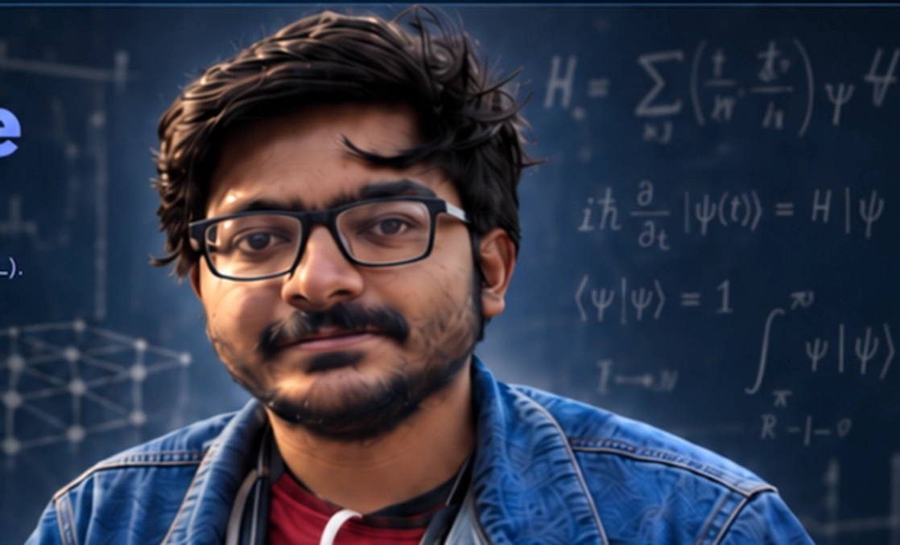

SIMULATING QUANTUM MATTER
Sanchayan Banerjee
Integrated Ph.D.
NISER, Bhubaneswar
Current Visiting Guest Scientist at Max Planck Institute for the Science of Light (MPL).
“Study hard what interests you the most in the most undisciplined, irreverent and original manner possible.”
— Richard P. Feynman

RESEARCH / 01
Research Interests
Intersections of quantum correlations, disorder, dynamics and computation. Choose a topic to explore.
Selected Publications
View all publicationsUpcoming Projects
METHODS / 02
Methods & Computational Expertise
From microscopic Hamiltonians to simulations of many-body quantum matter.
RESEARCH OUTPUT / 03
Publication Archive
Publications and preprints, with direct links for further reading.
BACKGROUND / 04
About
I am pursuing an Integrated Ph.D. at the National Institute of Science Education and Research (NISER), Bhubaneswar, under Prof. Tapan Mishra, and I am currently a Visiting Guest Scientist at the Max Planck Institute for the Science of Light.
My research explores quantum matter in the presence of interactions, disorder and driving. In equilibrium, I study strongly correlated phases, including symmetry-protected topological phases together with density-ordered and bond-ordered phases in one- and two-dimensional interacting systems. I am also interested in nonequilibrium phenomena involving doublons and repulsive bound states, and in localization physics ranging from multifractality and anomalous mobility edges in quasiperiodic systems to many-body localization, quantum chaos and many-body critical phases.
Periodically driven systems provide a route to engineer unconventional dynamics and reorganize phase structure away from equilibrium. Non-Hermitian and open-system settings raise complementary questions about nonreciprocity, dissipation, spectral structure, instability and the persistence of correlations in realistic quantum matter. I combine analytical insights with numerical many-body methods such as tensor networks and neural quantum states, and I am also exploring machine-learning-assisted quantum circuits and topoelectric platforms for analogue simulation of quantum matter.
View my CV (PDF)Academic milestones, schools & conferences
CONTACT / 05
Let's talk about quantum matter.
For research conversations, collaborations, or seminars, feel free to get in touch.
Send an emailNISER, Bhubaneswar · Max Planck Institute for the Science of Light